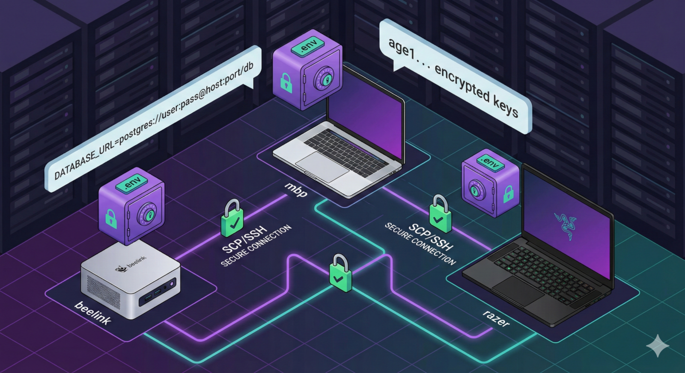

dotenvx vs env-sync
Encrypted dotenv + runtime injection compared to LAN peer synchronization.
env-sync is optimized for LAN-first teams that want peer-to-peer consistency, explicit trust boundaries, and lightweight operations.

Research refreshed using current official product docs and repositories (March 2026). env-sync is intentionally designed as a local-network, peer-to-peer .env sync tool with explicit trust modes.
Encrypted dotenv + runtime injection compared to LAN peer synchronization.
Encrypted file workflows with KMS/age/PGP versus always-on local machine sync.
Enterprise central secrets platform compared with lightweight decentralized sync.
Open-source secrets platform and governance stack versus local-first peer mesh.
Cloud-centric centralized secrets operations versus offline/LAN-first synchronization.